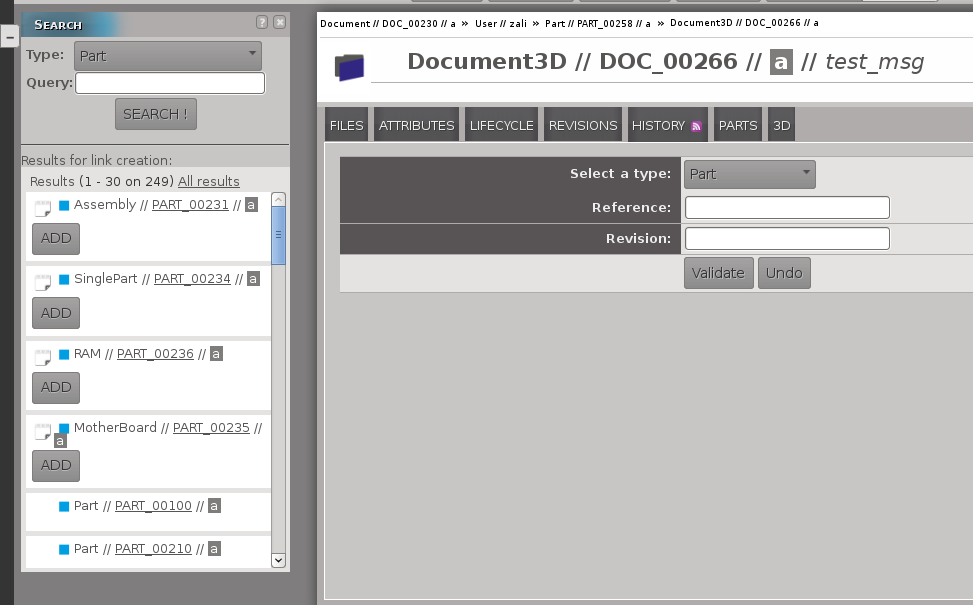
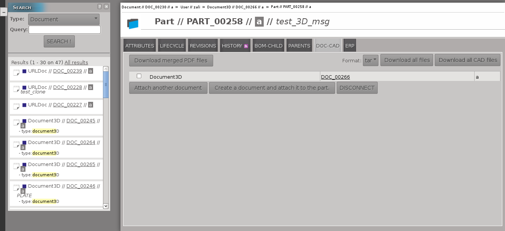
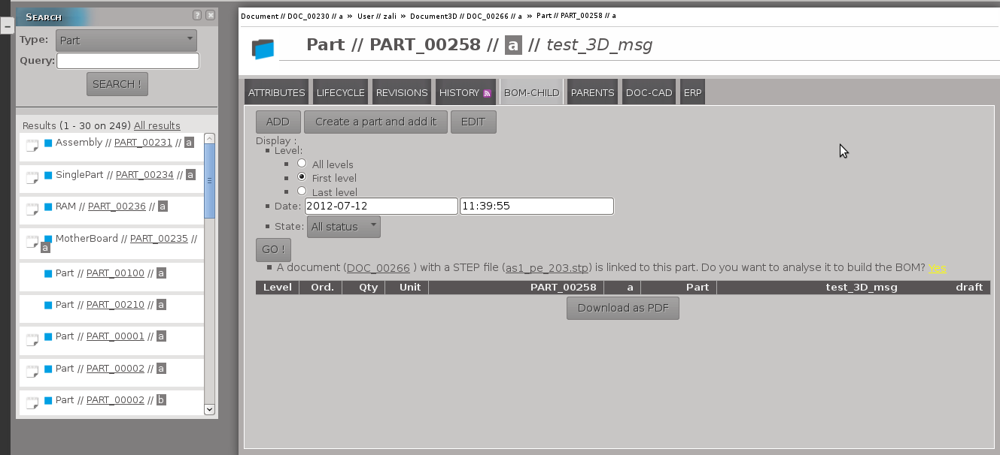
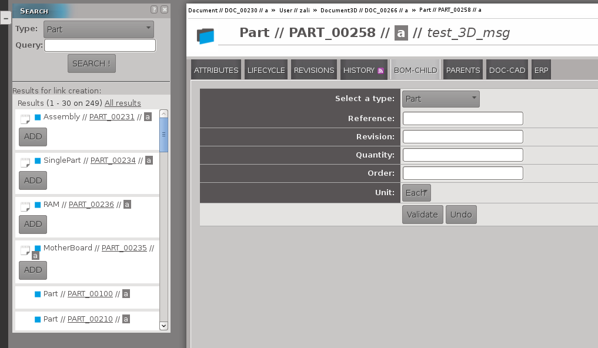

Management (add, update, delete, download) of files attached to the document.
Dispatch to a form in order to link an existing part to the current document.
This action and the possibilities are describe here
Dispatch to a creation form in order to create a part that will be linked to the current document.
Delete the link between the document and the selected parts.
This section only exists for 3D Document type.
In this section will be display the 3D view generated using the files linked to the document.
List of parts attached to the document.
The next picture describe how to link an existing part to a document

You can use the left panel (Search) to link a part to the document (only on this view).
A button ADD appears under the parts that can be linked to the document.
You can fill the form to link a part to the document.
The set of type, reference, revision must refer to an existing object.
The sections detailled in this paragraph are related to the document and part linked to the current part.
DOC-CAD
Download buttons enable the download of linked files either in PDF format or in archive format.

Dispatch to a form in order to link an existing document to the current part.
The principle is the same as describe to add an existing part to a document.
Dispatch to a creation form in order to create a document that will be linked to the current part.
Delete the link between the part and the selected documents.
ADD buttons will appear under documents which could be attached to the part after you click on the
"Attach an other document" button.
BOM-CHILD
The following pictures show how to add/generate and access to children (great-children,...).
If the current part has already children(parts) they will be displayed in the table which contains the children.

Dispatch to a form in order to link an existing part as a child.
This action and the possibilities are describe here
Dispatch to a creation form. The created part will be linked
as a child.
If you have necessary rights, you can edit the children (not the grandchild or great-grandchild...) of the current part.
You can filter the parts that will be display with the level, the date and the state.
If the current part is linked to a 3DDocument that contains STEP file, you can generate the (children) parts at all levels.
OpenPLM will analyse the STEP file to generate those parts and show those in the result table.
To finalize the creation of those parts you must click on the button Create that will be under the table.
Generate the result table. This table will contain the parts matching to the display filter.

You can use the left panel (Search) to link a part as a child.
A button ADD will appear under the parts that can be "added".
You can fill the form to add a child to the part.
The set of type, reference, revision must refer to an existing object.
Even if you use the left panel you must fill in the fields quantity, order and unit.